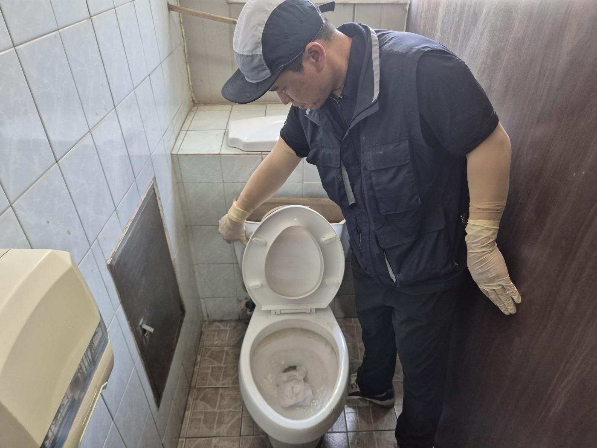
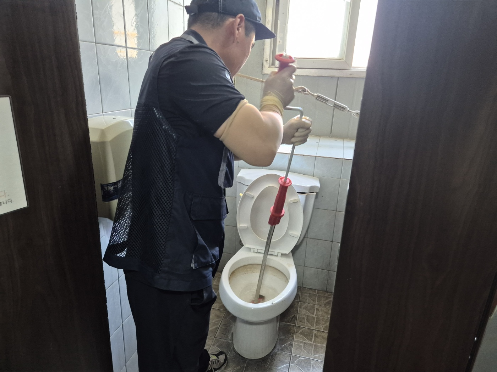
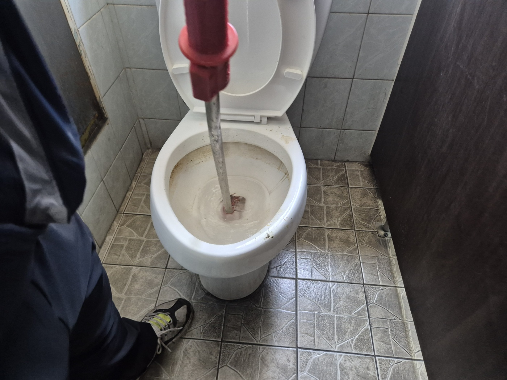
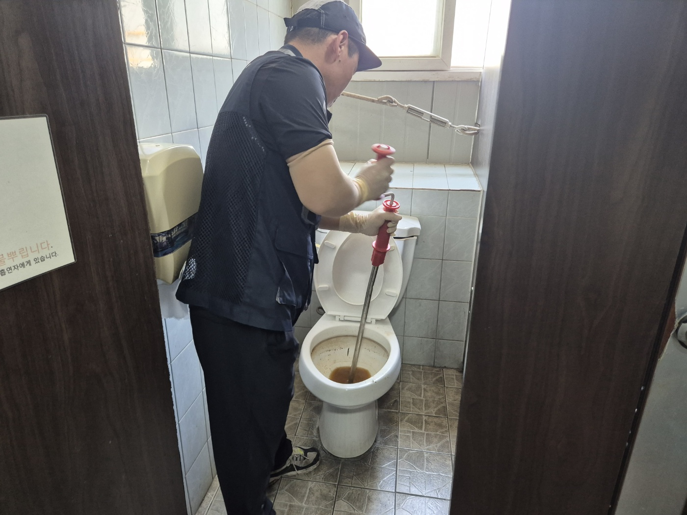
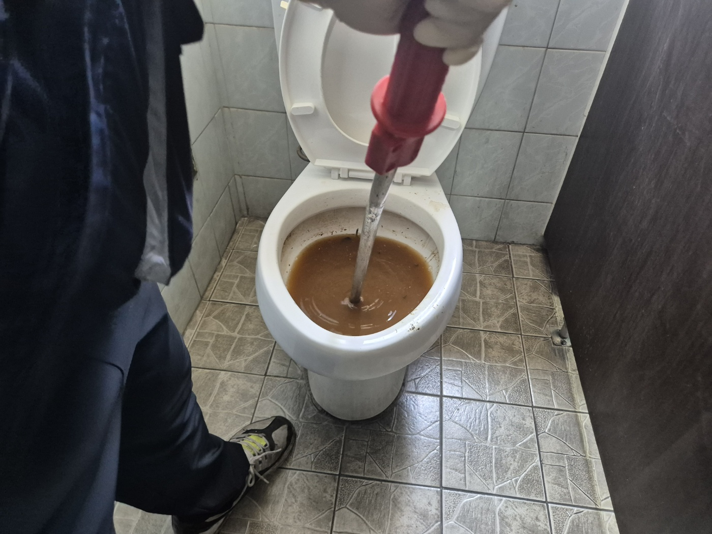
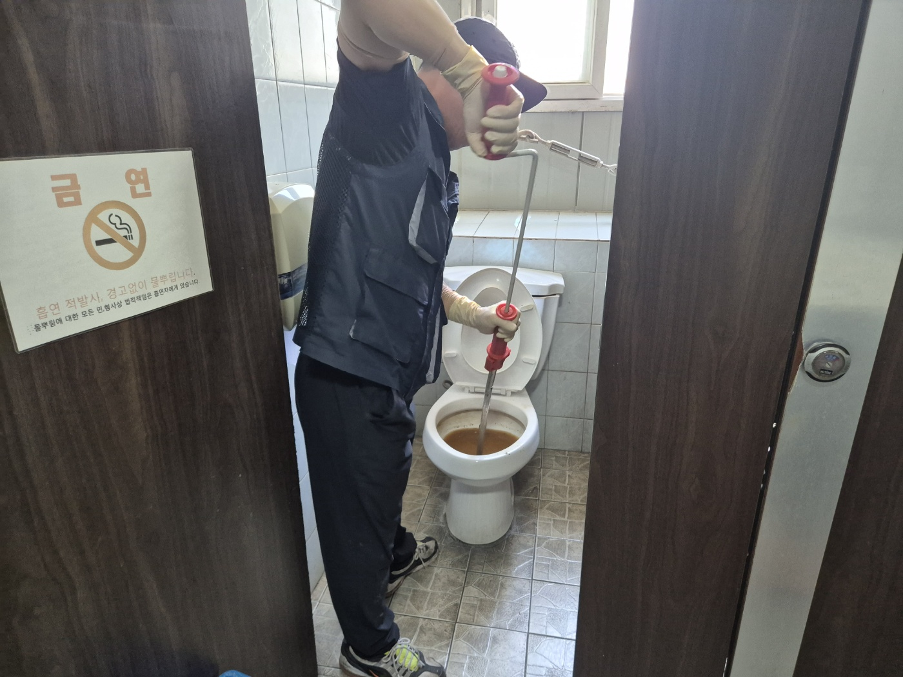
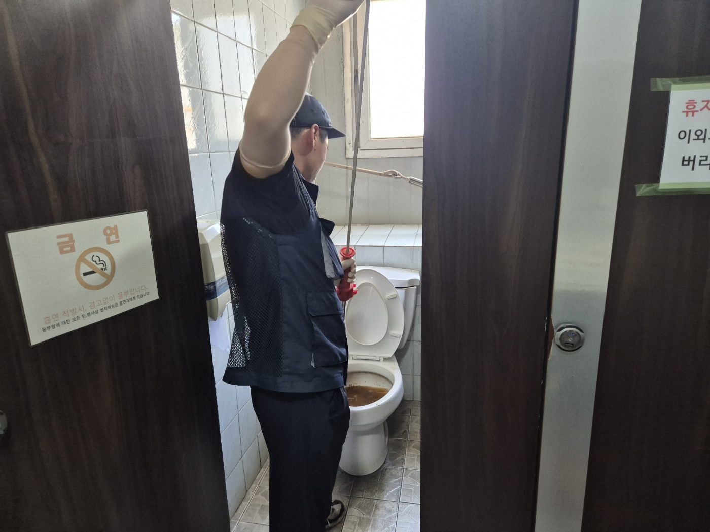
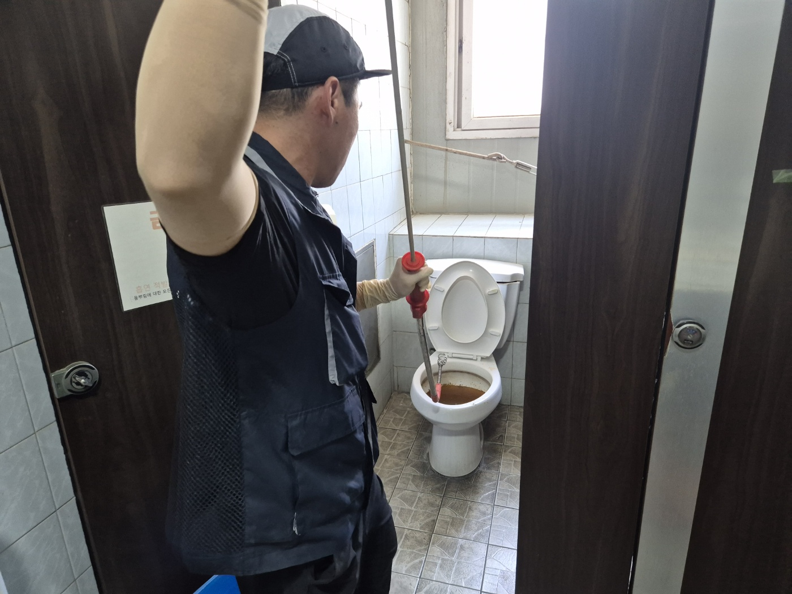
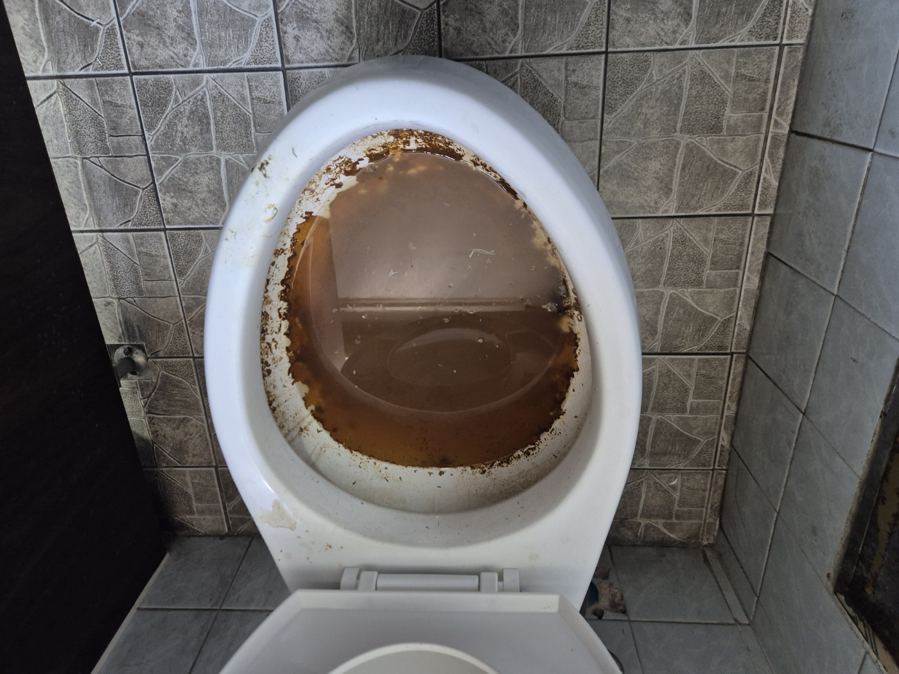
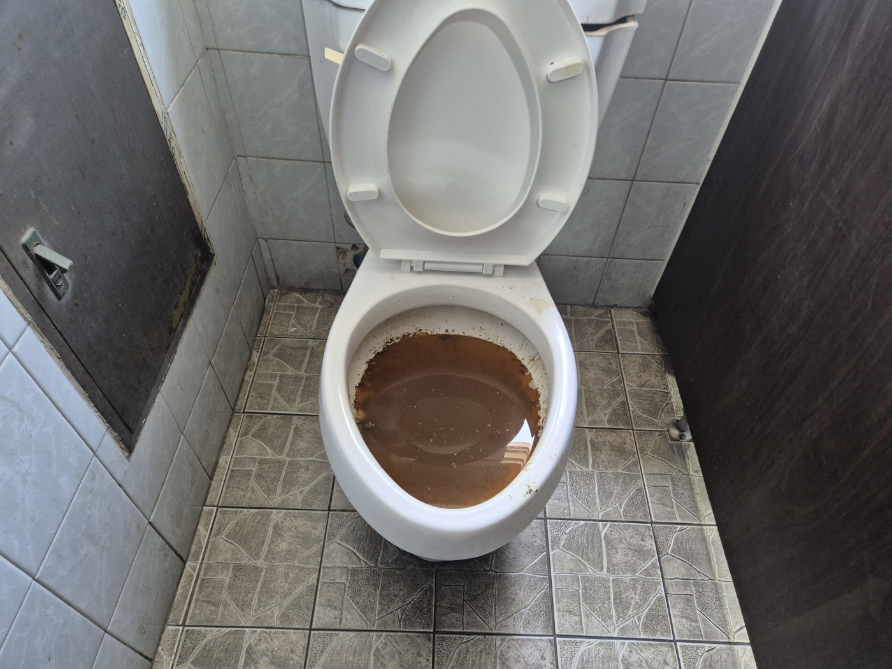

안녕하세요.. 고고고 설비입니다.. 오늘은 평택시 고덕에 있는 상가 화장실 변기막힘 신고를 받고 다녀온 현장입니다.
변기 안에 휴지가 그대로 뭉쳐서 물이 하나도 안 내려가는 상태였어요.. 여러 사람이 함께 쓰는 상가 화장실이라 빨리 처리해드려야 했습니다. 좁은 칸 안에 장비를 펼쳐야 해서 문부터 활짝 열어두고 시작했어요.
전동 와이어를 변기 안으로 밀어 넣고 천천히 돌려가며 막힌 부분을 뚫기 시작했습니다. 좁은 칸이라 몸을 완전히 숙이고 작업해야 했고, 팔을 머리 위까지 들어 올려가며 와이어를 조금씩 더 밀어 넣었어요.


와이어를 몇 번 왕복시키니 갇혀있던 오수가 올라오면서 물 색이 점점 진해졌습니다.. 안쪽 깊숙이 막혀있던 게 이제야 풀리는 느낌이었어요. 물이 탁해질수록 오히려 막힌 부분이 뚫리고 있다는 신호라 계속 밀어붙였습니다.


한 번에 뻥 뚫리는 느낌은 아니라서, 구간을 나눠 여러 번 왕복하며 계속 작업을 이어갔습니다. 화장실 칸막이에 붙어있던 금연 표시판을 보면서도 여기가 꽤 많은 분들이 오가는 화장실이라는 게 느껴지더라고요.



작업을 마치고 물을 여러 차례 내려보며 배수 상태를 확인했습니다. 오랫동안 막혀있던 만큼 처음엔 물이 탁했지만, 반복해서 확인하고 나니 막힘없이 잘 빠지는 걸 확인했어요. 변기 주변 바닥까지 깨끗하게 정리하고 나서 현장을 마무리했습니다.


여러 사람이 함께 쓰는 상가 화장실은 이물질이 쌓이는 속도가 빨라서, 배수가 조금이라도 느려지면 방치하지 마시고 바로 점검받으시는 걸 권해드립니다.
고고고 설비는 주택, 아파트, 원룸, 상가, 공장의 생활 하수 오수 배관을 관리해 주는 업체입니다. 고고고 설비에 전화 주시면 친절상담 정확한 진단 확실한 해결로 보답해 드리겠습니다!!